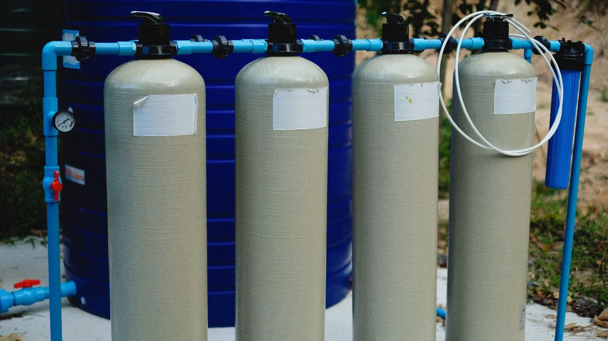

Lọc nước đầu nguồn
Lọc nước đầu nguồn là gì? Khi nào gia đình nên lắp hệ thống lọc tổng
Máy lọc ở bếp chỉ xử lý nước uống. Phần còn lại — nước tắm, giặt, rửa, nước vào bình nóng lạnh — đi thẳng từ đường ống vào nhà. Lọc đầu nguồn là lớp bảo vệ cho phần đó.